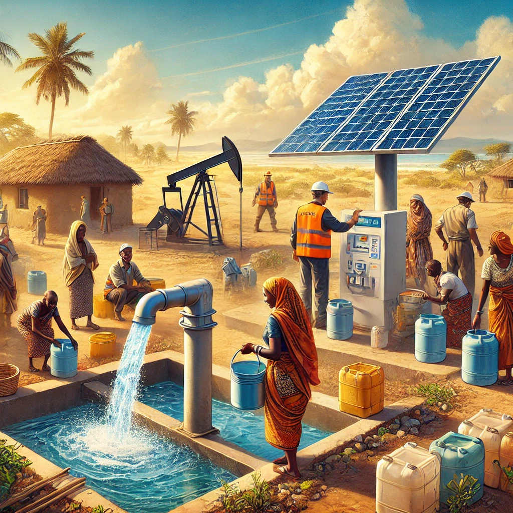

Recently Posted Campaigns

Clean Water for Oromia
WaterWorks International $25,000 raised
Bangladesh Resilient Roofs
Hope Builders $30,000 raised
Amazon Fresh Initiative
Brazil $16,000 raised
Rural Homes for Rajasthan
Hope Builders $8,000 raised

Lamu LifeStream Project
WaterWorks International $3,000 raised
Salud y Esperanza
Health Horizons Clinics $20,000 raised